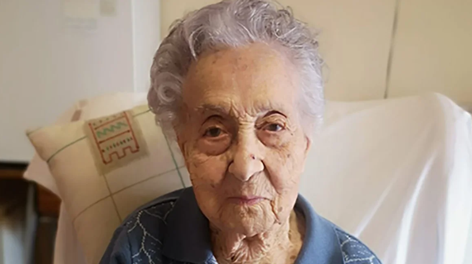

Morre a pessoa mais velha do mundo
A pessoa mais velha do mundo, Maria Branyas Morera, morreu aos 117 anos
“Mary faleceu pacificamente no lar de idosos na Catalunha, Espanha, onde residiu durante duas décadas”, afirmou o comunicado do Guinness World Records, que acrescentou que ela morreu na segunda-feira (19).
Maduro acusa líder de pacto com o Diabo!

O líder venezuelano, acusou, María Corina Machado, de ter um pacto com o diabo e com Elon Musk
Os ataques de Maduro contra Machado ocorrem em meio à disputa sobre quem ganhou a eleição presidencial venezuelana — a autoridade eleitoral, controlada por Maduro, afirma que o político bolivariano foi reeleito.
RJ quer transferir líderes do Comando Vermelho

Governo do RJ quer que líderes do Comando Vermelho sejam transferidos para presídios federais
Durante reunião, acordou-se pelo governador Cláudio Castro, secretários da polícia civil e outros sobre solicitar a transferência de líderes para impedir ordens de dentro da prisão para ataques a facções rivais.